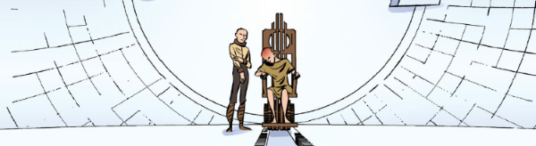

In a seemingly impossible clockwork solar system, we find ourselves in the dark ages: the occupants of the planets are ignorant of the technology that built their worlds, and the brass sun is slowing down, so that outliers are freezing over and entropy threatens all. Wren, our protagonist, holds the clues that might repair the slowing sun, but faces ignorance, prejudice and evil in her quest to rescue humanity.
This has an unusual narrative link with Kingmaker, in that a highly-evolved being with god-like powers is represented by a mental manifestation of author Kurt Vonnegut.
Edginton's "Wheel of Worlds" multiverse seems to have no clear narrative links here, except that the full scale orrery of planets mega-structure is a literal wheel of worlds, and the first series is named for it.
Art by INJ Culbard
| Story Title | Parts | Pages | w indicates a wraparound coverCovers | Year(s) | Issues | Writer | Artist | Colourist | Letterer |
|---|---|---|---|---|---|---|---|---|---|
| The Wheel of Worlds | 12 | 65 | 1806: Nick Percival 1 | 2012 | 1800-1811 | Ian Edginton | INJ Culbard | <-- | Ellie de Ville |
| The Diamond Age | 12 | 65 | 1852: INJ Culbard 1859: INJ Culbard 2 | 2013 | 1850-1861 | Ian Edginton | INJ Culbard | <-- | Ellie de Ville |
| Floating Worlds | 12 | 65 | 1888: INJ Culbard 1893: INJ Culbard 2 | 2014 | 1888-1899 | Ian Edginton | INJ Culbard | <-- | Ellie de Ville |
| Motor Head | 10 | 55 | 1954: INJ Culbard 1 | 2015 | 1950-1959 | Ian Edginton | INJ Culbard | <-- | Ellie de Ville |
| Engine Summer | 12 | 65 | 2066: INJ Culbard 1 | 2017-2018 | 2061-2072 | Ian Edginton | INJ Culbard | <-- | Ellie de Ville |
| year | episodes | pages |
| 2005 | 0 | 0 |
| 2006 | 0 | 0 |
| 2007 | 0 | 0 |
| 2008 | 0 | 0 |
| 2009 | 0 | 0 |
| 2010 | 0 | 0 |
| 2011 | 0 | 0 |
| 2012 | 12 | 65 |
| 2013 | 12 | 65 |
| 2014 | 12 | 65 |
| 2015 | 10 | 55 |
| 2016 | 0 | 0 |
| 2017 | 1 | 10 |
| 2018 | 11 | 55 |
| 2019 | 0 | 0 |
| 2020 | 0 | 0 |
| 2021 | 0 | 0 |
| 2022 | 0 | 0 |
| 2023 | 0 | 0 |
| 2024 | 0 | 0 |
| 2025 | 0 | 0 |